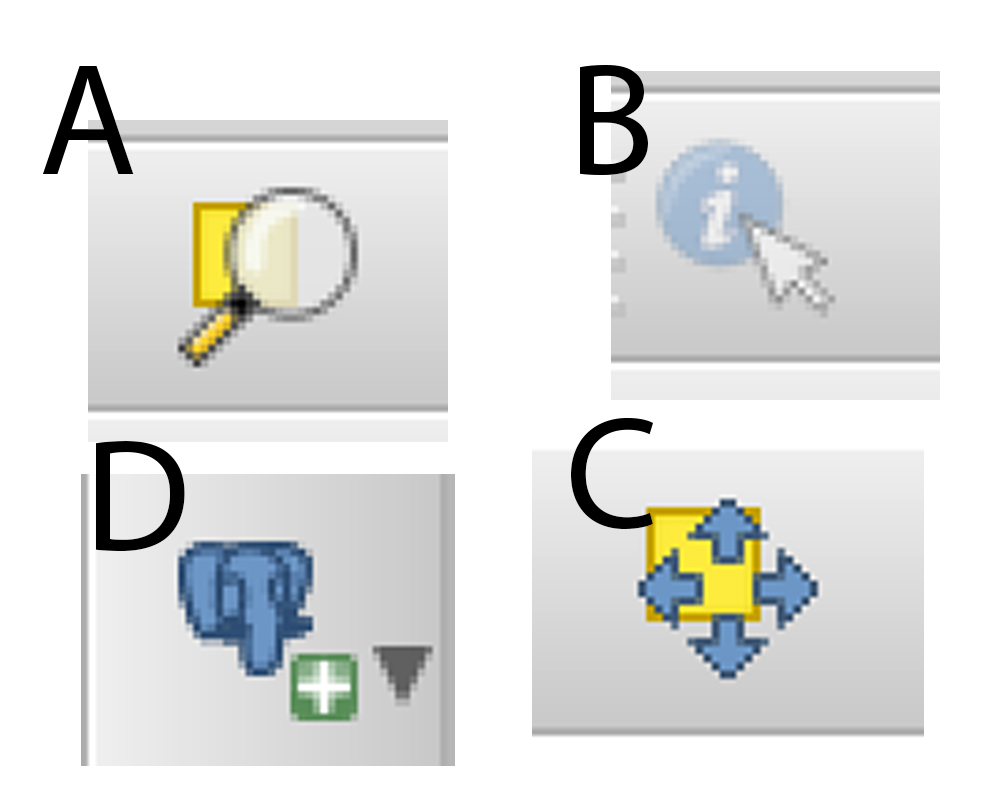

2017
Exam 3
Colin Broderick, Dave Corley & Mark Whelan
http://github.com/maplesotho
 #MapLesotho
#MapLesotho
1. The following are apps on your phone that you might use to help #MapLesotho?
1. Mapillary, Osmose and QGIS
2. QGIS, Maps.me and ID
3. Maps.me, OSMtracker and Mapillary
4. OSM tracker, Osmose and QGIS
2. The Memorandum of Understanding if it is not extended will end in...?
1. 2019
2. 2016
3. 2017
4. 2018
3. The acronym LAP in the Irish Planning system stands for ?
1. Local Action Plan
2. Local Area Plan
3. Legally Adopted Plan
4. Limping Arthrtic Person
4. Morija's average building size in an OSM analysis was ?
1. 4 square metres
2. 188 square metres
3. 125 square metres
4. 98 square metres
5. What do we call all the types of technology being used in #MapLesotho?
1. Crowdsource
2. Openstreetmap
3. Opensource
4. Crowdfunding
6. How many edits are there on the OSM database for #MapLesotho?
1. 14.9 million
2. 19.2 million
3. 10.3 million
4. 5.5 million
7. The black symbol on the corner of a Field Papers Maps is called a
1. Bar Code
2. Q code
3. Zip Code
4. QR Code
8. Last Year #MapLesotho sent a modem around the country in what month?
1. May
2. June
3. July
4. January
9. When you open OSMOSE the first time your map will open on ?
1. The Philipines
2. Ireland
3. Lesotho
4. France
10. Two districts have finished their mapping AND validation. These are:
1. Quthing and Leribe
2. Berea and Qacha's Nek
3. Maseru and Quthing
4. Qacha's Nek and Quthing
11. Under which menu do you find the Snapping options?
1. Edit
2. View
3. Layer
4. Project
12. Print Composer -> which do you add to select a fancy north arrow?
1. Add Map
2. Add Arrow
3. Add Scale
4. Add Image
13. If you're layers are in different parts of the world when they should overlap you should...
1. Start again it's just wrong
2. Check if On The Fly (OTF) projection is enabled
3. Scream
4. manually reposition the layers to the right place
14. What do I click to add a shapefile?
1. Create Layer
2. Edit Layer
3. Add Layer
4. None of the above
15. What filetype is a QGIS style file?
1. .style
2. .qgis
3. .shp
4. .qml
16. What are the other tools on the posm?
1. Field papers, Imagery API, OpenMapKit, OSM
2. Maps.me, OSMose. Field Papers
3. OSM
4. Mapillary, OpenMapKit
17. Zoom to selection is a QGIS tool?
1. True
2. False
18. Can you combine more data sources than OSM with QGIS?
1. True
2. False
19. How much does 6 dominos pizzas cost a mapathon organiser?
1. 5000 M
2. 400 M
3. 650 M
4. 220 M
20. When viewing the attribute table for a layer I can..
1. filter to see only my selected features
2. select a feature & pan to it
3. select a feature & zoom to it
4. select multiple features
21. I can vary layer symbology by setting visibility scales?
1. True
2. False
22. What does POSM stand for?
1. Portable Open Sewing Machine
2. Portable Open Street Map
3. Potable Open Sewer Manager
4. None of the above.
23. What is an LAP?
1. Local Area Party
2. Loaded Apple Pie
3. Local Area Plan
4. Lemons Apples Pears
24. Which of the tools below do you use to Idenitify features in QGIS?

25. What is the correct filter for both primary/secondary roads?
1. `"highway" IN ('primary', 'secondary')`
2. `"highway" IS NOT NULL`
3. `"highway" = 'primary'`
4. `"highway" = 'secondary'`
26. Which flow below is correct for adding a layer from the POSM GIS database?
- Click on Add PostGIS -> make a new connection with POSM details -> check wifi connected to posm -> connect -> click public and add layer
- Click on manage postgis database -> connect -> add layer
- None are correct
- Click AddPostGIS layer -> select POSM connection -> click connect -> add layer from public schema
27. What type of symbology filtering did we use for landuses layer?
1. Rule Based
2. Categorized
3. Graduated
4. No symbols
28. I want a layer of districts, which is the right filter?
1. ` "name" = '5'`
2. ` "boundary" = 'District'`
3. ` "other" -> 'name'`
4. `"admin_level" = '5'`
29. I want to label my admin layer -> how do I add labels?
1. Edit Labeling -> Labels -> pick layer admin -> set label field to `name`
2. Layer Properties -> Labels -> enable labels -> set label field to `name` -> set position
3. Lables -> set field to `name`.
4. None of these
30. What do we use the map composer for?
1. Making layouts for maps
2. Printing Maps
3. Editing data within a map
4. Mapping with OSM
31. How many levels of issues are there in Osmose?
1. 1
2. 3
3. 6
4. 9
32. When you're onthe osmose main screen, what do you have to do before you can start using
1. Enter your USername details and then select grant access to your account.
2. Start editing straight away
3. Select "Grant Access" to your account
4. Enter your username details
33. On the user statistics screen, what is the correct next step to bring you to the map with the detected issues?
1. Select "Show Issues" on the map
2. Go directly to JOSM
3. Select Lesotho issues
4. Select #MapLesotho
34. Select the correct steps to do after you've fixed your issue in JOSM?
1. Upload from JOSM, click validate, return to OSMose screen and change status of issue.
2. Continue editing in JOSM
3. Return to OSMose screen and change status of selected issue
35. The status of an issue in osmose can be changeed to either "" or ""?
1. Corrected or false postive
2. Right or True negative
36. The current ID editor version is...
1. 2.1.0
2. 3.2.1
3. 2.1.2
4. 3.0.1
37. Portmarnock has a big Mapillary Contributor. He is
1. Sam Missile
2. Sam Barlow
3. Gary Barlow
4. Niall FitzGerald
39. To help me navigate Maps.me needs
1. Internet Credit and Location
2. Free memory and GPS
3. GPS or Location be switched on
4. Mapillary
40. The OSM bible is more commonly know as...
1. iD
2. the osm wiki
3. google maps
4. the LAA
41. To rotate a building in JOSM what key combo do you use?
1.
2.
3.
4.
42. If you want to shrink the size of a building, what's the key combo?
1.
2.
3.
4.
43. Copying tags from one feature to another what key combo?
1. PASTE AND THEN COPY
2. Right click on feature -> copy tags and paste.
3. `CTRL` + `C` and then `CTRL` + `SHIFT` + `V`
44. By default the building tool adds tag "building=yes". To change this what key combo do you use?
1. Data -> Set buildings size
2.
3.
4.
45. If someone wanted to know more about #MapLesotho where do you send them
1. To Lineo
2. the les times
3. maplesotho.com
4. osmwiki
46. The reason we do so much checking and quality control on the map is...
1. to fix broken junctions
2. fix incorrect tagging
3. close broken polygons
47. The Maplesotho analysis tools reports on which tags?
1. Building, Landuse, Amenity, Highway, Barrier and natural
2. Ponds, Roads, Maps, Tracks
3. surface_type, amenity, layer, level
4. areas, points, ways
49. The organisation that have developed the POSM server is
1. The Red Cross
2. HOTOSM
3. Fingal County Council
4. Openstreetmap
50. On the HOTOSM task manager #MapLesotho has
1. 9 tasks
2. 10 tasks
3. 11 tasks
4. 12 tasks
Thank you!
Questions?
http://github.com/entsoe-tso
http://github.com/rustyb
@rusty1052